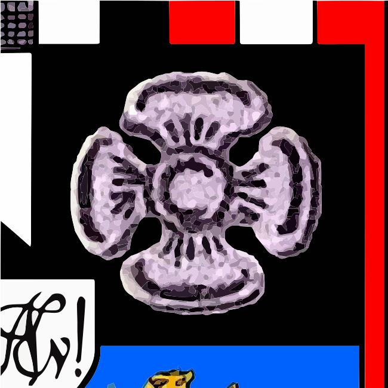
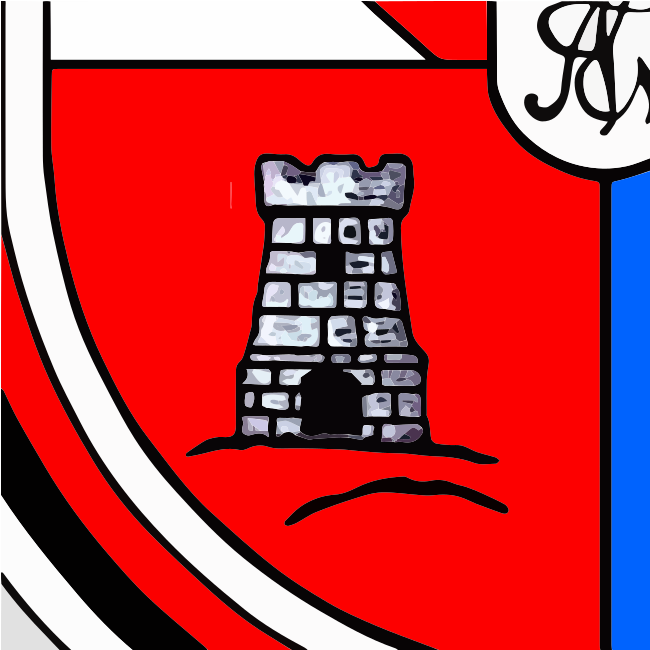
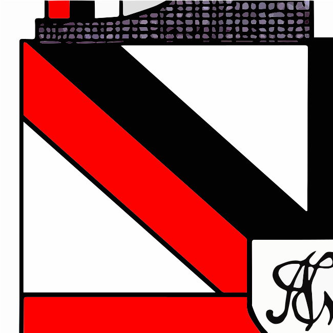
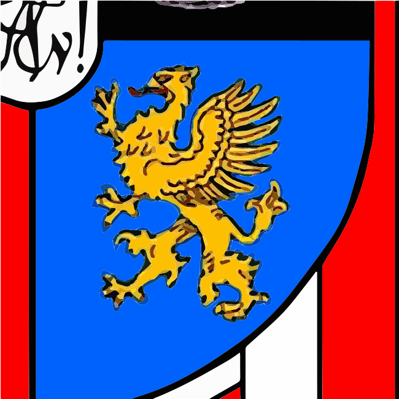

Die KDStV Nordmark
...ist eine katholische, farbentragende und nichtschlagende Studentenverbindung. Sie wurde im Jahre 1929 in Rostock gegründet und besteht seit 1976 in Essen.
Sie ist eine eingetragene akademische Vereinigung an der Universität Duisburg-Essen und gehört dem Cartellverband der katholischen deutschen Studentenverbindungen (CV) an, der mit 128 Verbindungen an fast allen deutschen Hochschulorten vertreten und somit der größte Akademikerverband Europas ist. Seine rund 30.000 Mitglieder setzen sich aus ca. 4.000 Studierenden und ca. 26.000 ehemaligen Studierenden, den sogenannten Alten Herren, zusammen. Diese Alten Herren stehen den aktiven Studenten mit Rat und ihrer Erfahrung zur Seite. Durch die Zusammensetzung quer durch alle Altersstufen und Fachrichtungen lernt man, die Grenzen des eigenen Studiengangs zu überschreiten und diesen erweiterten Horizont sowohl während als auch nach der Studienzeit sinnvoll zu nutzen.
Unsere Verbindung gibt uns die Sicherheit einer festen Gemeinschaft auch über die Studienzeit hinaus. Das Verbindungsleben fördert die Entwicklung der eigenen Persönlichkeit und bietet die Möglichkeit, die Anonymität der Massensuniversitäten zu überwinden. Die generationsübergreifenden Freundschaften zwischen den Cartell- und Bundesbrüdern fördern eine uneingeschränkte Sichtweise im Sinne eines studium generale.
Uns eint das Bekenntnis zu den Prinzipien religio, scientia, amicitia und patria.
Unsere Prinzipien

religio
Religio meint: Gelebte Zugehörigkeit zur katholischen Kirche, Teilnahme an ihren Lebensformen, das Bemühen um die Einheit der Christen. In unserer Verbindung und außerhalb verpflichtet uns insbesondere das Hauptgebot der Liebe, das sich vorrangig bewähren soll im Einsatz um Frieden, Toleranz, Solidarität und soziale Gerechtigkeit.

scientia
Scientia verpflichtet zunächst zur gewissenhaften Durchführung des Studiums. Unsere Gemeinschaft von Studierenden und ehemaligen Studenten ermöglicht gegenseitige Unterstützung im eigenen Studiengang und schafft darüber hinaus die Möglichkeit der interdisziplinären Diskussion. Dies und wissenschaftliche Vorträge verhelfen zu einem breitgefächerten akademischen Wissen.

amicitia
Amicitia braucht die Gemeinschaft. Regelmäßige Treffen und gemeinschaftliche Unternehmungen stärken das Zusammenhörigkeitsgefühl. Ebenso fördern sie die persönliche Entwicklung durch die Werte Offenheit und Ehrlichkeit. Dies bildet die Grundlage für lebenslange Freundschaften.

patria
Das Prinzip patria beschreibt das Bekenntnis zur freiheitlich-demokratischen Grundordnung und zum deutschen Staat als Teil des geeinten Europas. Das Wissen um die eigene Kultur, Tradition und Geschichte ist unabdingbar, sowohl für das eigene Selbstverständnis als auch für die Gestaltung und Bewältigung von Gegenwart und Zukunft.